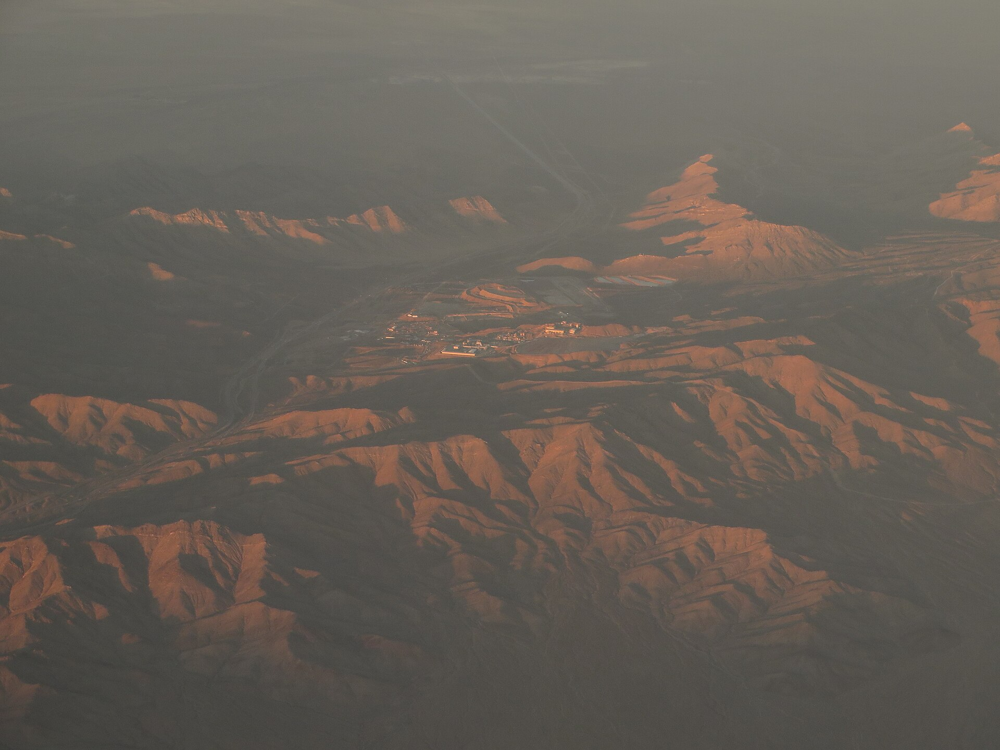

Kazakhstan Postpones New Royalty System for Solid Minerals to 2029
The government moves the royalty from 1 January 2027 to 1 January 2029. Several technical questions remain unresolved.

The government of Kazakhstan has postponed the introduction of a new royalty system for solid minerals from 1 January 2027 to 1 January 2029.
The decision was taken at the 28th meeting of the Project Office for the implementation of the Tax Code, chaired by Deputy Prime Minister and Minister of National Economy Serik Zhumangarin. The postponement was proposed by the Ministry of Industry and Construction.
Who the new system applies to
The new royalty system applies only to mining licences issued after 31 December 2026 in areas where subsoil-use rights had not previously been granted.
Under the royalty system, payment is linked to the sale of the mineral product, rather than to extraction from the ground.
Proposed rates
- Ore — 13%
- Concentrate — 10%
- Metals — 7%
Budget impact
According to 2024 estimates by the State Revenue Committee, applying rates similar to Western Australia could cut annual budget revenue by about KZT 270 billion (about $606 million).
Extending royalties to all subsoil users could mean losses of about KZT 450 billion (about $1.01 billion).
More than 7,000 subsoil users account for about 35% of Kazakhstan's republican budget revenue.
Reasons for the delay
Several questions remain unresolved:
- how to calculate royalties on minerals recovered from old tailings and mining waste
- how to treat expensive new projects
- how to treat valuable minerals produced alongside a mine's main commodity
Following the discussion, participants supported postponing the application of royalties on solid minerals from January 1, 2027, to January 1, 2029.
— Statement by the Government of Kazakhstan, 28th meeting of the Tax Code Project Office (via The Times of Central Asia)
By the numbers
- Introduction: from 1 January 2027 → postponed to 1 January 2029
- Rates: ore 13%, concentrate 10%, metals 7%
- At Western Australia rates: about KZT 270bn (about $606m)
- If extended to all users: about KZT 450bn (about $1.01bn)
- Subsoil users: 7,000+
- Share of republican budget revenue: about 35%
Why it matters
Because the new system applies only to licences issued after 31 December 2026, it does not immediately affect currently operating mines. The royalty payment is tied to the sale of the product rather than to extraction.
The delay is linked to unresolved questions on how to account for minerals recovered from old waste, expensive new projects, and valuable minerals produced alongside a mine's main commodity.